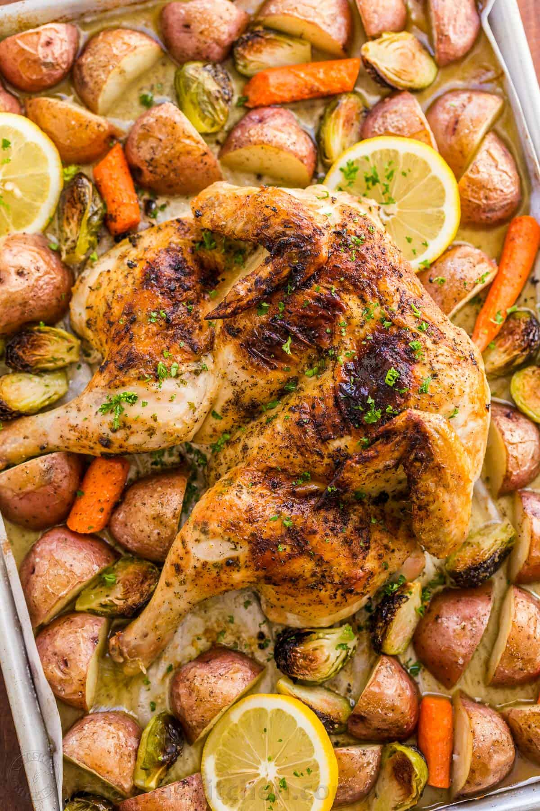

Spatchcock Chicken

Description
This way of cooking a whole chicken makes sure you get it perfectly cooked all the way through, and yet remains juicy and tender. Nobody likes dry chicken! The carrot, brussels sprouts, and potatoes cook along with the chicken and provide the perfect side dish to complement. The carrots too, when cooked at a high heat, caramelise. The sweetness as such helps to bring balance to the dish. Finally, the dish is very simple to prepare, and I say this as a novice cook.
Ingredients
Spatchcock Chicken
- 1.93 kg whole chicken
- 1/2 tsp salt
- 1/8 tsp black pepper
Flavoured Butter
- 4 tbsp unsalted butter (softened)
- 1 tbsp olive oil, plus extra to drizzle the chicken
- 1 tbsp parsley (finely chopped)
- 2 garlic cloves (minced)
- 1/2 tsp lemon zest
- 1 tbsp lemon juice
- 1 tsp salt (for the flavoured butter), plus more for the vegetables
- 1/8 tsp black pepper
Vegetables
- 907.2g medium red potatoes, scrubbed and quartered
- 3 medium carrots
- 226.8g Brussels Sprouts, trimmed and halved
Steps
- (Preheat oven to 218°C/425°F after step 4). Place chicken breast-side down with the wings neck facing towards you. To remove the spine, use kitchen shears to cut through the ribs right next to the spine along both sides. Open rib cage and use a heavy knife to score down the sternum. This will help pop out the breast bone and flatten chicken. Season inside the chicken with 1/2 tsp salt and a pinch of black pepper.
- Flip the chicken over breast side up and set on parchment-lined, rimmed baking half sheet. Using the palm of your hand, push firmly over the breast bone forcing the chicken to lay completely flat. Use your thumbs to separate the skin from the meat over breast, thigh and drumstick areas.
- In a small mixing bowl, combine the flavoured butter ingredients. Mash with fork for a couple of minutes until lemon juice is mostly incorporated into butter.
- Spread 2/3 of mixture under the chicken skin and and spread remaining butter all over chicken.
- Place prepared vegetables all around the chicken and drizzle everything with olive oil. Sprinkle chicken and vegetables generously with salt and some black pepper to taste.
- Bake uncovered at 218°C/425°F for 45 min or until instant read thermometer reads 71°C/160˚F when inserted into thickest part of chicken breast. Remove form oven and rest uncovered 10 minutes on a cutting board before serving.